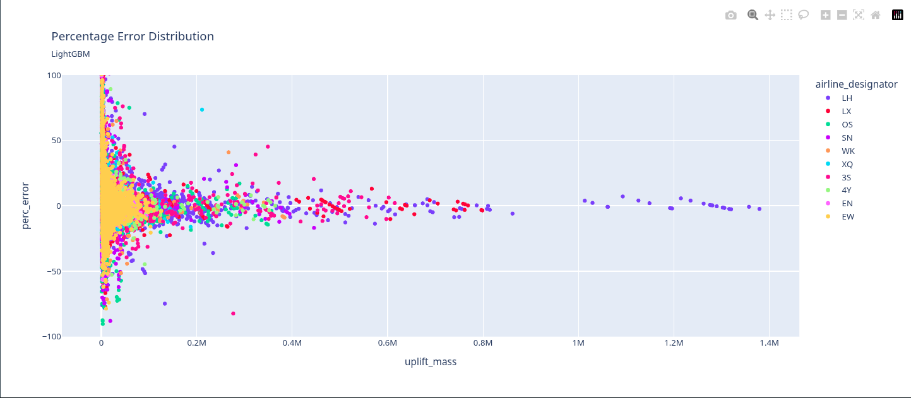

Uplift Prediction
DataTactics GmbH
Samuel McGuire - Steven Williams
26-08-2025
Goal: More efficient fuel Uplift forecast
Staus Quo: The current tool assigns the average uplift from the last
three full calendar months for the city pair, airline and aircraft type
to each event in the schedule and sums everything up.
Schedule behavior analysis
Schedule behavior analysis
Our Idea Model 1
- Scheduled and actual flights are rarely the
same
- Model difference between scheduled and actual
flights
- Features used:
- Aircraft type, Airport, Airline
- Time based trends and seasonal features
- Days from current schedule until flight
- Forecast: Number of departures, Number of minutes
flown
- Take these values and feed them to a second
model
Our Idea Model 2
- Use output of model 1 as input to predict total
uplift
- Instead of using avg try other ML based models
- Compare the results to status quo as well as actual
uplift
Assumptions
- Using a seasonal avg of mins flown will be better than the scheduled
min
- Minutes flown and total departures is a good indicator of fuel
uplift
- Due to scheduling flux modeling schedule changes will lead to more
accurate forecasts
Model 2 General results

Model Flow Chart

HOw does our model compare to yours?
The answer: to improve transparency and coordination
Before departure:
🛫 Fueling must be done
🧳 Baggage loading must be finished
🍽 Catering must be finished
👨✈️ Crew needs a clear status
Simple monitoring → Smoother operations → Fewer delays
Improvements to our model that will make it even better
- 🧱 PostgreSQL – Raw flight & fueling data
- 🔁 Rahla – Event-driven data processing
- 🧠 SciKit Learn – model
- 🧪 MLflow – Model versioning / Serving
- ☸️ Kubernetes – Deployment platform
- 🔁 ArgoCD – Orchestration
- 🛠️ Theia – Continual development environment
Some dT Projects in the airline industry

- 🔁 Fuel Emission Forecasting
- 👥 Passenger Flow
- 🛰️ Flight Positioning
- ⛽ Fueling Duration
- 💳 Fuel Purchase Forecasting
Let’s connect